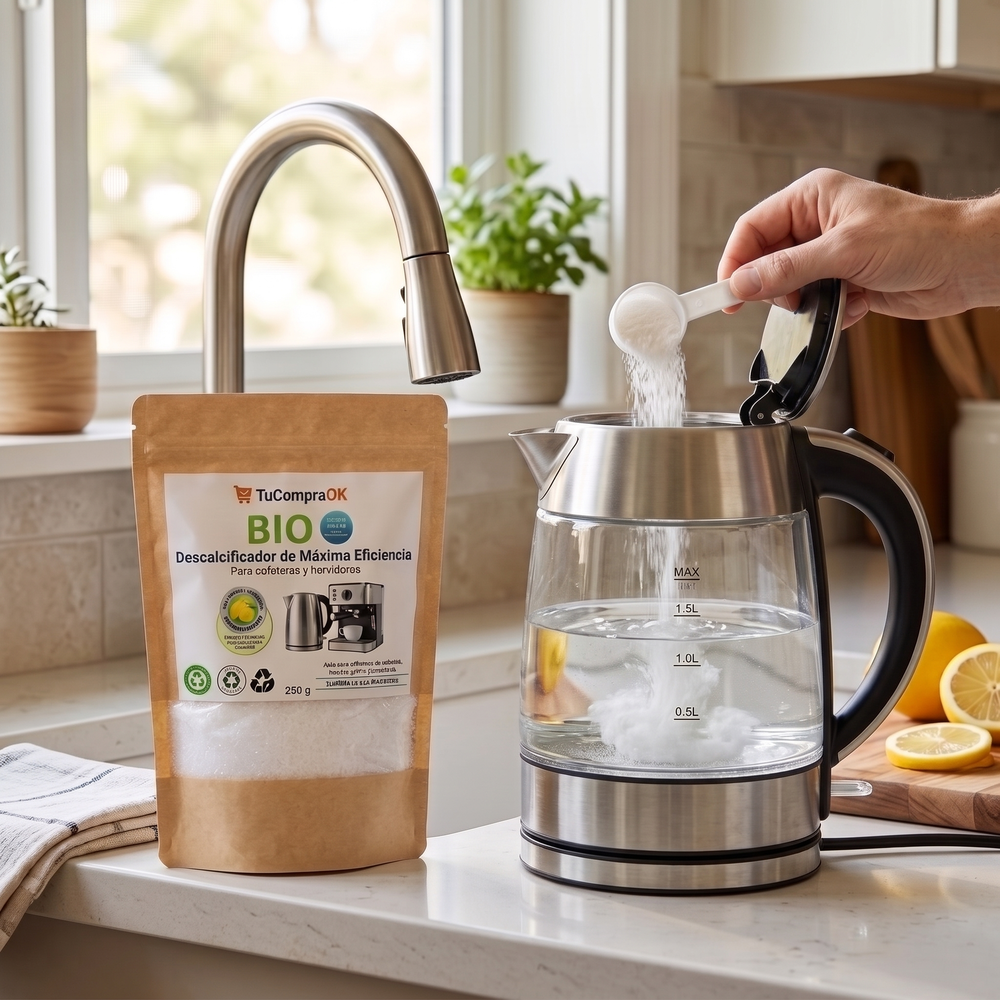

Guía práctica para el hogar
BIO Descalcificador
Instrucciones de preparación y aplicación para ayudar a remover depósitos de sarro en equipos y superficies compatibles.

15–30 gDosis general por 500 ml
10–20 minTiempo según aplicación
EnjuagarCon abundante agua al finalizar
01 · Preparación
Dosis base para limpieza general
1–2 cucharadas15–30 g de producto
Disuelve la dosis en 500 ml de agua tibia. Espera a que el producto se disuelva completamente antes de aplicarlo.
02 · Aplicaciones
Desincrustación paso a paso

| Aplicación | Tiempo | Instrucciones |
|---|---|---|
| Hervidores y cafeteras | 10–15 min | Disuelve en agua tibia, llena el depósito y, al terminar, enjuaga con abundante agua. |
| Grifería y duchas | 10–15 min | Aplica con pulverizador o esponja sobre el sarro y luego enjuaga. |
| Sanitarios y azulejos | 15–20 min | Aplica directamente sobre manchas de agua o sarro acumulado y enjuaga. |
03 · Tratamiento localizado
Preparación de pasta desincrustante
Mezcla 1 cucharada del producto con unas gotas de agua tibia hasta formar una pasta espesa.
Aplica la pasta directamente sobre la zona con sarro o la mancha difícil.
Deja actuar de 10 a 15 minutos.
Frota suavemente con un cepillo o esponja y enjuaga con abundante agua.
04 · Otros usos
Métodos multiuso en el hogar
- Filtros y lavavajillasColoca 2 cucharadas en el cajetín de detergente y realiza un ciclo de lavado vacío para eliminar sarro y grasa.
- Termos y utensiliosLlena con agua tibia y 1 cucharada de producto. Deja reposar 15 minutos y enjuaga.
- Limpiador multisuperficieMezcla 2 cucharadas en 500 ml de agua con unas gotas de detergente suave para cubiertas y azulejos.

05 · Cuidado y seguridad
Buenas prácticas y emergencias
- Prueba de compatibilidad: aplica primero en una zona poco visible si tienes dudas sobre la superficie.
- Almacenamiento: conserva el producto bien cerrado, en un lugar seco y fresco, fuera del alcance de niños y mascotas.
- Contacto con ojos o piel: enjuaga con abundante agua limpia. En caso de ingesta accidental, bebe abundante agua y no induzcas el vómito.
¿Necesitas recargar?
Obtén un 5% de descuento con el cupón del empaque.